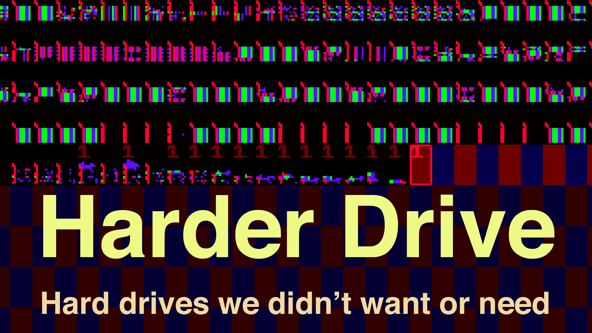

|
Harder
Drive:
Hard drives we didn't want or need Read wordsConsider reading the paper, Harder Drive: Hard drives we didn't want or need, which appears in SIGBOVIK 2022. (bibtex)Watch draws and hear wordsOf course, there are multiple irksome videos on my YouTube channel Suckerpinch! Browse the internetIf you have a 64-bit Windows machine and enough RAM (32 GB?) and want to try out the app I used in the video for exploring the IPv4 address space, you can try this torrent: harder-drive-internet-map.torrent. I'll shoot to keep this working through the end of April 2022, but no promises.RingtonesEnhance your mobile calling experience with the ringtone audio from the video, available with my other songs at Tom 7 Entertainment System.Have your own Harder DriveGood luck trying to use the impenetrable source code.Please leave a comment on my blog or on Twitter at @tom7! Get all Tom 7 thingos at → [tom7.org] |